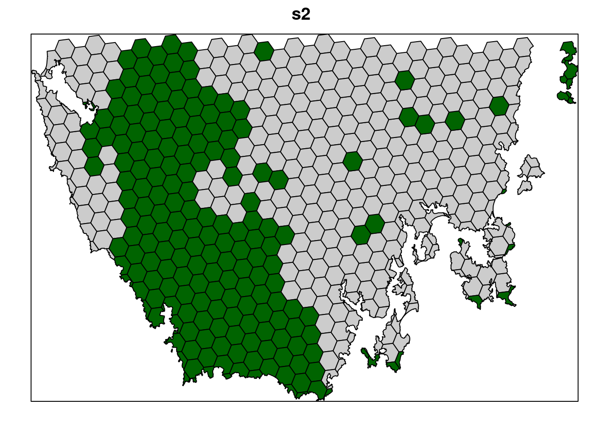
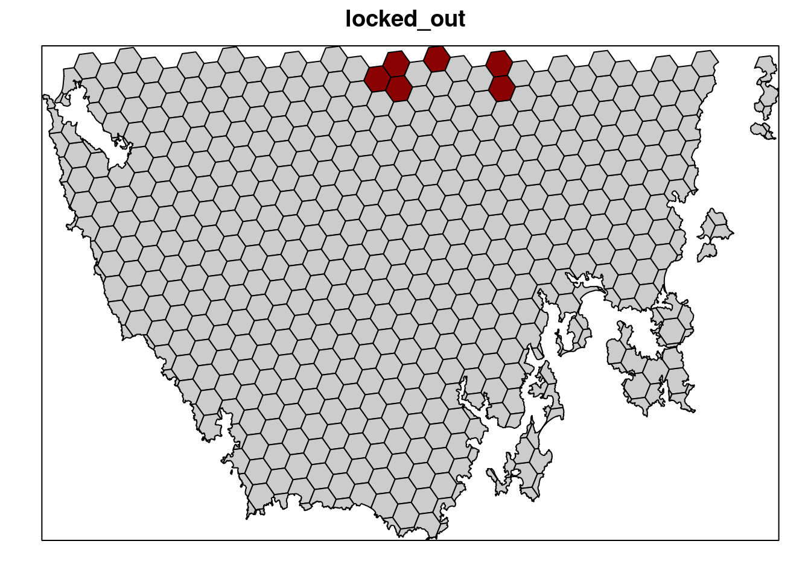

Chapter 5 Spatial prioritizations
5.1 Introduction
Here we will develop prioritizations to identify priority areas for protected area establishment. Its worth noting that prioritizr is a decision support tool (similar to Marxan and Zonation). This means that it is designed to help you make decisions—it can’t make decisions for you.
5.2 Starting out simple
To start things off, let’s keep things simple. Let’s create a prioritization using the minimum set formulation of the reserve selection problem. This formulation means that we want a solution that will meet the targets for our biodiversity features for minimum cost. Here, we will set 5% targets for each vegetation class and use the data in the cost column to specify acquisition costs. Although we strongly recommend using Gurobi to solve problems (with add_gurobi_solver), we will use the lpsymphony solver in this workshop since it is easier to install. The Gurobi solver is much faster than the lpsymphony solver (see here for installation instructions).
## class : SpatialPolygonsDataFrame
## features : 516
## extent : 348703.2, 611932.4, 5167775, 5344516 (xmin, xmax, ymin, ymax)
## crs : +proj=utm +zone=55 +south +datum=WGS84 +units=m +no_defs
## variables : 6
## names : id, cost, status, locked_in, locked_out, pa_status
## min values : 557, 3.59717531470679, 0, 0, 0, 0
## max values : 1130, 47.238336402701, 2, 1, 1, 1# make prioritization problem
p1 <- problem(pu_data, veg_data, cost_column = "cost") %>%
add_min_set_objective() %>%
add_relative_targets(0.05) %>% # 5% representation targets
add_binary_decisions() %>%
add_lpsymphony_solver()
# print problem
print(p1)## Conservation Problem
## planning units: SpatialPolygonsDataFrame (516 units)
## cost: min: 3.59718, max: 47.23834
## features: vegetation.1, vegetation.2, vegetation.3, ... (32 features)
## objective: Minimum set objective
## targets: Relative targets [targets (min: 0.05, max: 0.05)]
## decisions: Binary decision
## constraints: <none>
## penalties: <none>
## portfolio: default
## solver: Lpsymphony [first_feasible (0), gap (0.1), time_limit (2147483647), verbose (1)]# solve problem
s1 <- solve(p1)
# print solution, the solution_1 column contains the solution values
# indicating if a planning unit is (1) selected or (0) not
print(s1)## class : SpatialPolygonsDataFrame
## features : 516
## extent : 348703.2, 611932.4, 5167775, 5344516 (xmin, xmax, ymin, ymax)
## crs : +proj=utm +zone=55 +south +datum=WGS84 +units=m +no_defs
## variables : 7
## names : id, cost, status, locked_in, locked_out, pa_status, solution_1
## min values : 557, 3.59717531470679, 0, 0, 0, 0, 0
## max values : 1130, 47.238336402701, 2, 1, 1, 1, 1# calculate number of planning units selected in the prioritization
eval_n_summary(p1, s1[, "solution_1"])## # A tibble: 1 x 2
## summary cost
## <chr> <dbl>
## 1 overall 16## # A tibble: 1 x 2
## summary cost
## <chr> <dbl>
## 1 overall 390.# plot solution
# selected = green, not selected = grey
spplot(s1, "solution_1", col.regions = c("grey80", "darkgreen"), main = "s1",
colorkey = FALSE)Now let’s examine the solution.
- How many planing units were selected in the prioritization? What proportion of planning units were selected in the prioritization?
- Is there a pattern in the spatial distribution of the priority areas?
- Can you verify that all of the targets were met in the prioritization (hint:
eval_feature_representation_summary(p1, s1[, "solution_1"]))?
5.3 Adding complexity
Our first prioritization suffers many limitations, so let’s add additional constraints to the problem to make it more useful. First, let’s lock in planing units that are already by covered protected areas. If some vegetation communities are already secured inside existing protected areas, then we might not need to add as many new protected areas to the existing protected area system to meet their targets. Since our planning unit data (pu_da) already contains this information in the locked_in column, we can use this column name to specify which planning units should be locked in.
# plot locked_in data
# TRUE = blue, FALSE = grey
spplot(pu_data, "locked_in", col.regions = c("grey80", "darkblue"),
main = "locked_in", colorkey = FALSE)# make prioritization problem
p2 <- problem(pu_data, veg_data, cost_column = "cost") %>%
add_min_set_objective() %>%
add_relative_targets(0.05) %>%
add_locked_in_constraints("locked_in") %>%
add_binary_decisions() %>%
add_lpsymphony_solver()
# print problem
print(p2)## Conservation Problem
## planning units: SpatialPolygonsDataFrame (516 units)
## cost: min: 3.59718, max: 47.23834
## features: vegetation.1, vegetation.2, vegetation.3, ... (32 features)
## objective: Minimum set objective
## targets: Relative targets [targets (min: 0.05, max: 0.05)]
## decisions: Binary decision
## constraints: <Locked in planning units [198 locked units]>
## penalties: <none>
## portfolio: default
## solver: Lpsymphony [first_feasible (0), gap (0.1), time_limit (2147483647), verbose (1)]# solve problem
s2 <- solve(p2)
# plot solution
# selected = green, not selected = grey
spplot(s2, "solution_1", col.regions = c("grey80", "darkgreen"), main = "s2",
colorkey = FALSE)
Let’s pretend that we talked to an expert on the vegetation communities in our study system and they recommended that a 10% target was needed for each vegetation class. So, equipped with this information, let’s set the targets to 10%.
# make prioritization problem
p3 <- problem(pu_data, veg_data, cost_column = "cost") %>%
add_min_set_objective() %>%
add_relative_targets(0.1) %>%
add_locked_in_constraints("locked_in") %>%
add_binary_decisions() %>%
add_lpsymphony_solver()
# print problem
print(p3)## Conservation Problem
## planning units: SpatialPolygonsDataFrame (516 units)
## cost: min: 3.59718, max: 47.23834
## features: vegetation.1, vegetation.2, vegetation.3, ... (32 features)
## objective: Minimum set objective
## targets: Relative targets [targets (min: 0.1, max: 0.1)]
## decisions: Binary decision
## constraints: <Locked in planning units [198 locked units]>
## penalties: <none>
## portfolio: default
## solver: Lpsymphony [first_feasible (0), gap (0.1), time_limit (2147483647), verbose (1)]# solve problem
s3 <- solve(p3)
# plot solution
# selected = green, not selected = grey
spplot(s3, "solution_1", col.regions = c("grey80", "darkgreen"), main = "s3",
colorkey = FALSE)Next, let’s lock out highly degraded areas. Similar to before, this information is present in our planning unit data so we can use the locked_out column name to achieve this.
# plot locked_out data
# TRUE = red, FALSE = grey
spplot(pu_data, "locked_out", col.regions = c("grey80", "darkred"),
main = "locked_out", colorkey = FALSE)
# make prioritization problem
p4 <- problem(pu_data, veg_data, cost_column = "cost") %>%
add_min_set_objective() %>%
add_relative_targets(0.1) %>%
add_locked_in_constraints("locked_in") %>%
add_locked_out_constraints("locked_out") %>%
add_binary_decisions() %>%
add_lpsymphony_solver()## Conservation Problem
## planning units: SpatialPolygonsDataFrame (516 units)
## cost: min: 3.59718, max: 47.23834
## features: vegetation.1, vegetation.2, vegetation.3, ... (32 features)
## objective: Minimum set objective
## targets: Relative targets [targets (min: 0.1, max: 0.1)]
## decisions: Binary decision
## constraints: <Locked out planning units [6 locked units]
## Locked in planning units [198 locked units]>
## penalties: <none>
## portfolio: default
## solver: Lpsymphony [first_feasible (0), gap (0.1), time_limit (2147483647), verbose (1)]# solve problem
s4 <- solve(p4)
# plot solution
# selected = green, not selected = grey
spplot(s4, "solution_1", col.regions = c("grey80", "darkgreen"), main = "s4",
colorkey = FALSE)
Now, let’s compare the solutions.
- What is the cost of the planning units selected in
s2,s3, ands4? - How many planning units are in
s2,s3, ands4? - Do the solutions with more planning units have a greater cost? Why (or why not)?
- Why does the first solution (
s1) cost less than the second solution with protected areas locked into the solution (s2)? - Why does the third solution (
s3) cost less than the fourth solution solution with highly degraded areas locked out (s4)?
5.4 Penalizing fragmentation
Plans for protected area systems should promote connectivity. However, the prioritizations we have made so far have been highly fragmented. To address this issue, we can add penalties to our conservation planning problem to penalize fragmentation. These penalties work by specifying a trade-off between the primary objective (here, solution cost) and fragmentation (i.e. total exposed boundary length) using a penalty value. If we set the penalty value too low, then we will end up with a solution that is nearly identical to the previous solution. If we set the penalty value too high, then prioritizr will (1) take a long time to solve the problem and (2) we will end up with a solution that contains lots of extra planning units that are not needed. This is because the minimizing fragmentation is considered so much more important than solution cost that the optimal solution is simply to select as many planning units as possible.
As a rule of thumb, we generally want penalty values between 0.00001 and 0.01. However, finding a useful penalty value requires calibration. The “correct” penalty value depends on the size of the planning units, the main objective values (e.g. cost values), and the effect of fragmentation on biodiversity persistence. Let’s create a new problem that is similar to our previous problem (p4)—except that it contains boundary length penalties and a slightly higher optimality gap to reduce runtime (default is 0.1)—and solve it. Since our planning unit data is in a spatial format (i.e. vector or raster data), prioritizr can automatically calculate the boundary data for us.
# make prioritization problem
p5 <- problem(pu_data, veg_data, cost_column = "cost") %>%
add_min_set_objective() %>%
add_boundary_penalties(penalty = 0.001) %>%
add_relative_targets(0.1) %>%
add_locked_in_constraints("locked_in") %>%
add_locked_out_constraints("locked_out") %>%
add_binary_decisions() %>%
add_lpsymphony_solver()
# print problem
print(p5)## Conservation Problem
## planning units: SpatialPolygonsDataFrame (516 units)
## cost: min: 3.59718, max: 47.23834
## features: vegetation.1, vegetation.2, vegetation.3, ... (32 features)
## objective: Minimum set objective
## targets: Relative targets [targets (min: 0.1, max: 0.1)]
## decisions: Binary decision
## constraints: <Locked out planning units [6 locked units]
## Locked in planning units [198 locked units]>
## penalties: <Boundary penalties [edge factor (min: 0.5, max: 0.5), penalty (0.001), zones]>
## portfolio: default
## solver: Lpsymphony [first_feasible (0), gap (0.1), time_limit (2147483647), verbose (1)]# solve problem,
# note this will take a bit longer than the previous runs
s5 <- solve(p5)
# print solution
print(s5)## class : SpatialPolygonsDataFrame
## features : 516
## extent : 348703.2, 611932.4, 5167775, 5344516 (xmin, xmax, ymin, ymax)
## crs : +proj=utm +zone=55 +south +datum=WGS84 +units=m +no_defs
## variables : 7
## names : id, cost, status, locked_in, locked_out, pa_status, solution_1
## min values : 557, 3.59717531470679, 0, 0, 0, 0, 0
## max values : 1130, 47.238336402701, 2, 1, 1, 1, 1# plot solution
# selected = green, not selected = grey
spplot(s5, "solution_1", col.regions = c("grey80", "darkgreen"), main = "s5",
colorkey = FALSE)Now let’s compare the solutions to the problems with (s5) and without (s4) the boundary length penalties.
- What is the cost the fourth (
s4) and fifth (s5) solutions? Why does the fifth solution (s5) cost more than the fourth (s4) solution? - Try setting the penalty value to 0.000000001 (i.e.
1e-9) instead of 0.0005. What is the cost of the solution now? Is it different from the fourth solution (s4) (hint: try plotting the solutions to visualize them)? Is this is a useful penalty value? Why (or why not)? - Try setting the penalty value to 0.5. What is the cost of the solution now? Is it different from the fourth solution (
s4) (hint: try plotting the solutions to visualize them)? Is this a useful penalty value? Why (or why not)?